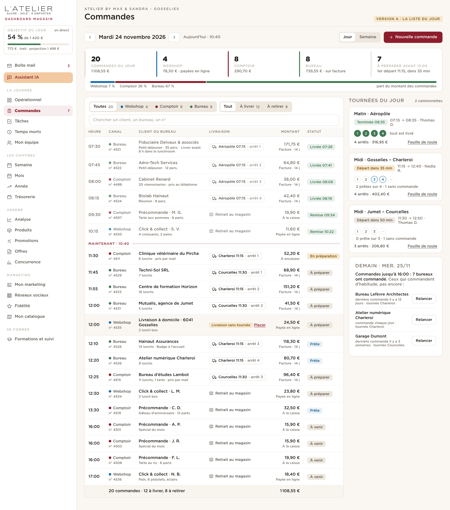
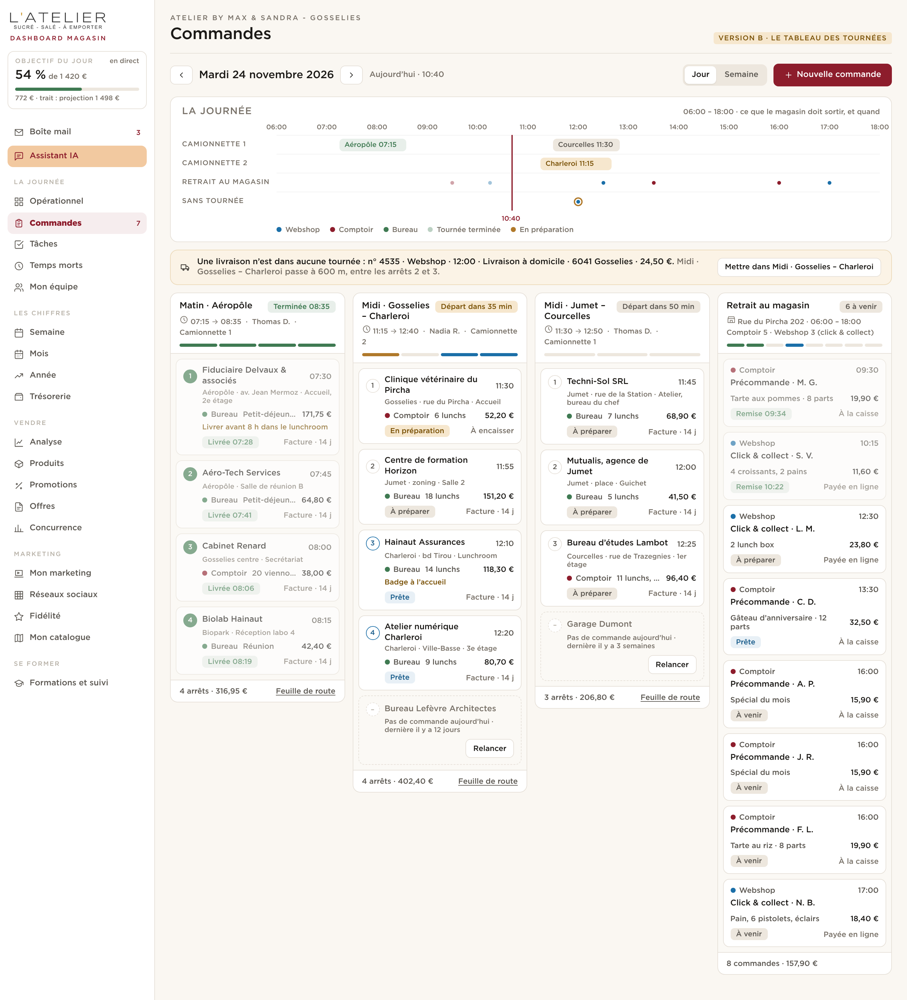
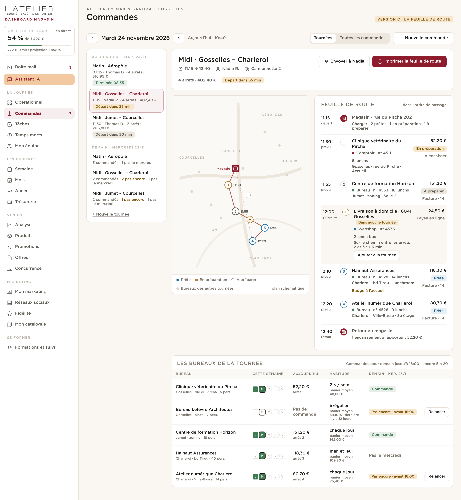

A · La liste du jourune liste, trois canaux, la tournée de chaque commande ; les tournées et demain à droite
B · Le tableau des tournéesla journée en frise, une colonne par tournée, une pour le retrait au magasin
C · La feuille de routeune tournée, son plan, son ordre de passage, et les bureaux qu’elle dessert